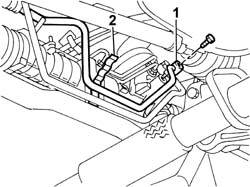
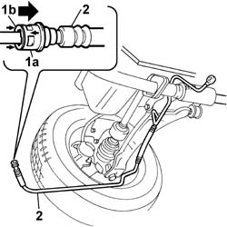

4130B49 return pipe from power steering case to heat exchanger pipe r r
- Path
- Procedures > 41 STEERING UNIT > 4130 POWER STEERING > 4130B POWER STEERING HYDRAULIC SYTEM > 4130B49 return pipe from power steering case to heat exchanger pipe r r
- Kind
- repair procedure (removal / refitting; the operation number is the code)
- Applies to
- all engines; all production periods
- Interactive page
- https://sloeber94.github.io/elrnDB-fDbl/en/#/2584730
Applies to: all engines; all production periods
 Removing
Removing
 Refitting
RefittingPlace the car on a lift.
Disconnect the battery negative terminal lead.
Op. 7055B54 PROTECTION/GUARD UNDER ENGINE - R.R..
1. Disconnect the connector for the return pipe on the power assisted steering box.
Place a container underneath to collect the fluid which comes out.
2. Disconnect the pipe from the retaining band.

Applies to: all engines; all production periods
1. Disconnect the rapid connector for the return pipe on the heat exchanger pipe.
Release the pipe from the retaining brackets.
2. Remove the pipe from the engine compartment.

Applies to: all engines; all production periods
Refitting
RemovingPosition the pipe.
Connect the return pipe, using the rapid connector, to the heat exchanger pipe.
Connect the connector for the return pipe to the power assisted steering box.
 | Fastening | Component | Ø | Value (daNm) |
|---|---|---|---|---|
- | Connector | POWER STEERING BOX/EXCHANGE RIGID PIPE | M12 x 1.5 | (On power assisted steernig box ) 3 |
Secure the return pipe to the bodyshell using the bands.
Op. 7055B54 PROTECTION/GUARD UNDER ENGINE - R.R..
Connect the battery negative terminal lead.
Remove the car from the lift.
Refill the power assisted steering system using appropriate fluid.
 | Type | Component | Name | Qty. |
|---|---|---|---|---|
- | Oli [l] | POWER ASSISTED STEERING CIRCUIT | TUTELA GI/A | - |
TUTELA HP 20 power assisted steering fluid is recommended for use in particularly harsh climatic conditions.
| Type | Component | Name | Qty. |
|---|---|---|---|---|
- | Oli [l] | POWER ASSISTED STEERING CIRCUIT | TUTELA HP 20 | - |
After bleeding the air, check the level of the power steering fluid again and top up, as necessary.